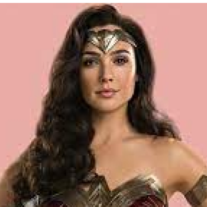
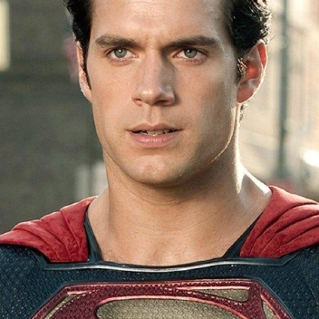

Batman (conocido inicialmente como Bat-Man) es un personaje creado por los estadounidenses Bob Kane y Bill Finger, y propiedad de DC Comics. Apareció por primera vez en la historia titulada «El caso del sindicato químico» de la revista Detective Comics N.º 27, lanzada por la editorial National Publications el 30/3/1939.

MUJER MARAVILLA
Es una superheroína creada por William Moulton Marston para la editorial DC Comics. Es una princesa guerrera de las Amazonas, pueblo ficticio basado en el de las amazonas de la mitología griega. En su tierra natal es conocida como la princesa Diana de Temiscira pero fuera de esta utiliza la identidad secreta de Diana Prince.

SUPERMAN
Es un superhéroe que apareció por primera vez en los cómics estadounidenses publicados por DC Comics.
El personaje fue creado por el escritor estadounidense Jerry Siegel y el artista canadiense Joe Shuster en 1933 cuando ambos se encontraban viviendo en Cleveland, Ohio.
SUPERMAN
Es un superhéroe que apareció por primera vez en los cómics estadounidenses publicados por DC Comics.
El personaje fue creado por el escritor estadounidense Jerry Siegel y el artista canadiense Joe Shuster en 1933 cuando ambos se encontraban viviendo en Cleveland, Ohio.